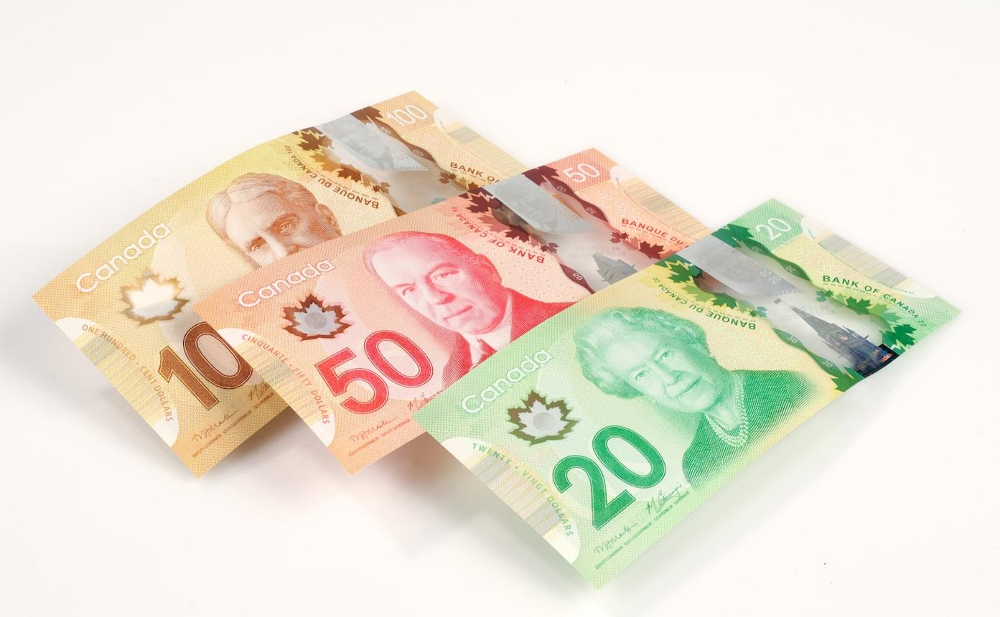
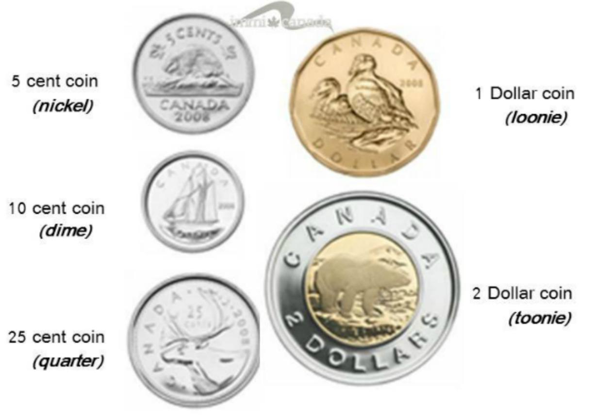
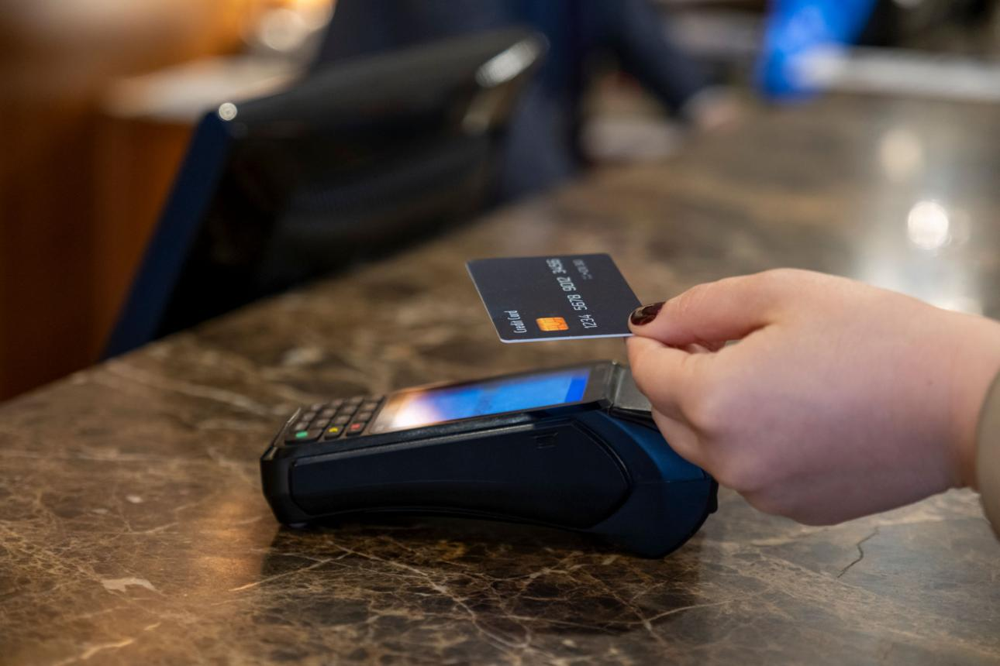

캐나다는 대부분의 장소에서 카드 결제가 가능하며, 현금은 팁이나 비상 상황 정도만 준비하면 충분합니다. 이 페이지에서는 여행 경비, 해외 결제, 환전, 카드 사용법, 팁 문화까지 한 번에 정리했습니다.
6명이 함께하는 캐나다 가족여행 기준으로 예상 비용을 정리했습니다. 실제 환율과 예약 시기에 따라 일부 금액은 변동될 수 있습니다.
한국 ↔ 캘거리
밴쿠버 ↔ 한국
캘거리 → 밴쿠버 국내선 포함
캔모어 숙소
밴쿠버 숙소
총 8박 기준
미니밴 렌트
보험 포함
예상 주유비 포함
6인 기준
장보기 포함
간식 포함
액티비티, 쇼핑, 환율 변동에 따라 최종 금액은 달라질 수 있습니다.
이번 여행에서 예정된 주요 액티비티의 예상 비용입니다. 환율과 예약 시점에 따라 일부 금액은 달라질 수 있습니다.
약 1,560,000원
(모레인 셔틀 + 곤돌라 + 미네완카 크루즈 + 카누 기준)
캐나다는 세계에서 카드 사용률이 가장 높은 국가 중 하나입니다. 대부분의 매장에서는 Visa 또는 Mastercard 한 장만 있어도 편리하게 결제할 수 있습니다.
주 결제는 신용카드로 하고, 체크카드는 예비용으로 준비하는 것이 가장 안전합니다. 현금은 팁이나 비상 상황에 사용할 정도만 환전하면 충분합니다.
캐나다에서는 대부분의 결제가 카드로 이루어집니다. 마트, 주유소, 식당, 카페, 관광지, 호텔 등 거의 모든 곳에서 신용카드 또는 체크카드를 사용할 수 있습니다.
대부분의 여행 일정에서는 카드만으로도 충분합니다.
해외 카드 결제 시 단말기에서 CAD(캐나다 달러)와 KRW(원화) 중 하나를 선택하는 화면이 나올 수 있습니다.
원화(KRW)를 선택하면 현지 카드 단말기 업체의 환율이 적용되어 불리한 환율과 추가 수수료가 발생하는 경우가 많습니다.
CAD를 선택하면 국내 카드사의 해외 결제 환율이 적용되어 일반적으로 더 유리합니다.
CAD = 선택
KRW = 선택하지 않기
결제 단말기에서 "Would you like to pay in Canadian Dollars?" 또는 "Pay in CAD" 가 보이면 그대로 진행하면 됩니다.
캐나다는 대부분 카드 결제가 가능하므로 많은 현금을 준비할 필요는 없습니다. 현금은 팁과 비상 상황에 사용할 정도만 준비하면 충분합니다.
여행 인원이 6명인 만큼 현금은 약 CAD $300 정도만 준비해도 대부분의 일정은 충분합니다. 식사, 숙박, 쇼핑, 액티비티는 모두 카드 결제를 추천합니다.
캐나다는 폴리머(플라스틱) 지폐를 사용하며, 동전에도 각각 별명이 있습니다. 여행 전에 알아두면 결제할 때 훨씬 편리합니다.

여행 중 가장 자주 사용하는 지폐는 $20입니다. 대부분의 거스름돈도 $20를 기준으로 받게 됩니다.

Quarter(25¢), Loonie($1), Toonie($2)는 팁이나 자판기 이용 시 자주 사용됩니다.
• 가장 많이 사용하는 지폐는 $20
• $1은 Loonie
• $2는 Toonie
• 동전은 팁이나 소액 결제에서 자주 사용됩니다.
캐나다에서는 대부분의 매장에서 카드나 스마트폰을 단말기에 가볍게 터치하는 Tap 결제를 사용합니다. 매우 빠르고 편리하며 여행 중 가장 많이 이용하는 결제 방식입니다.

Visa, Mastercard는 물론 Apple Pay와 Google Pay도 대부분의 매장에서 사용할 수 있습니다.
작은 금액은 대부분 PIN 입력 없이 Tap만으로 결제가 가능합니다. 단말기에 카드 또는 휴대폰을 1~2초 정도 갖다 대면 결제가 완료됩니다.
캐나다에서는 일부 서비스 업종에서 팁을 주는 문화가 일반적입니다. 단말기에 팁 선택 화면이 나타나는 경우도 많습니다.
15% 18% 20%
| 식사 금액 | 15% | 18% | 20% |
|---|---|---|---|
| CAD $50 | $7.50 | $9.00 | $10.00 |
| CAD $100 | $15.00 | $18.00 | $20.00 |
| CAD $150 | $22.50 | $27.00 | $30.00 |
일반 레스토랑에서는 15% 정도를 기준으로 생각하면 충분합니다. 특별히 만족스러운 서비스를 받았다면 18~20%를 선택하면 됩니다.
계획한 예산 안에서 즐거운 여행을 하기 위한 간단한 관리 방법입니다.
이번 일정이라면 가족 전체 기준 CAD 200~300 정도면 충분합니다.
항상 CAD(캐나다 달러)를 선택하세요. KRW(원화)는 추천하지 않습니다.
가능합니다. 다만 주 결제는 신용카드를 권장합니다.
대부분의 매장에서 Tap 결제로 사용할 수 있습니다.
레스토랑에서는 일반적으로 15% 정도를 많이 선택합니다. 마트와 편의점은 팁이 없습니다.
카드사에 즉시 분실 신고를 하고, 준비한 예비 카드를 사용하면 됩니다.